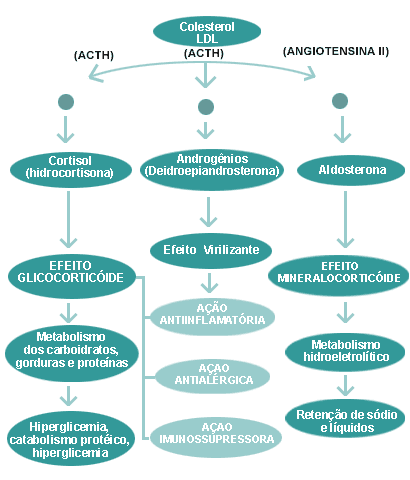
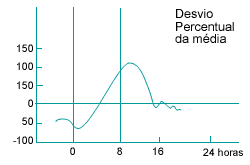
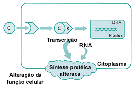
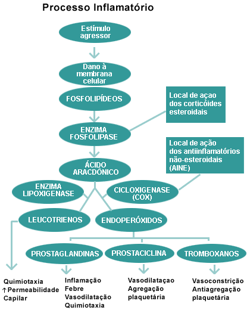
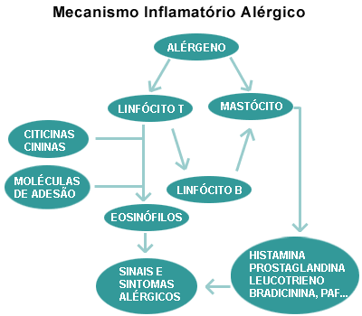
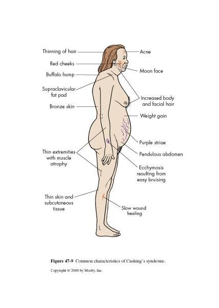

Córtex Estudos · 4º Semestre · Farmaco II · Aulas 01–02
Corticoides
Da fisiologia do cortisol ao Cushing iatrogênico: eixo HHA, ritmo circadiano, mecanismo genômico, os 5 mecanismos anti-inflamatórios, tabela de equivalência, esquema de retirada e interações — as duas aulas do Prof. Adilson explicadas do zero, com as lógicas que ele mandou "guardar bem".
1 · A adrenal e os 3 hormônios do córtex
- A glândula adrenal (suprarrenal) tem duas partes: MEDULA → adrenalina e noradrenalina; CÓRTEX → três hormônios: CORTISOL, ALDOSTERONA e os ANDROGÊNIOS (precursores da testosterona).
- É glândula endócrina: libera o conteúdo direto na corrente sanguínea. (Curiosidade experimental: o rato tem 5–6 adrenais — a adrenalectomia é modelo clássico de pesquisa.)
- Androgênios = efeito virilizante — e explicam por que mulheres têm testosterona sem ter testículo: a adrenal produz os precursores, com funções no metabolismo feminino (massa muscular, libido).
⚠️ "Apaguem essa setinha": testosterona anti-inflamatória?
O professor mandou riscar do slide a suposta ação anti-inflamatória dos androgênios: não há consenso científico — alguns artigos dizem que sim, outros que não. "Se eu perguntar, você não pode afirmar que existe."
2 · Cortisol fisiológico: o glicocorticoide órgão-seletivo
O que o cortisol faz com as 3 biomoléculas
- 1Carboidratos → HIPERGLICEMIANTE — eleva a glicemia (reduz a utilização de glicose pelas células e estimula a gliconeogênese).
- 2Proteínas → efeito ÓRGÃO-SELETIVO — ANABOLISMO no fígado (↑síntese proteica hepática) e CATABOLISMO no músculo (quebra de massa magra). "Guardem bem isso."
- 3Lipídios → LIPOGÊNICO — ↑síntese de triglicérides (mobiliza ácidos graxos que acabam estocados no tecido adiposo).
🎯 Por que Deus nos deu um anti-inflamatório natural?
As três ações farmacológicas do cortisol existem por razões fisiológicas: anti-inflamatório — para resolver pequenas lesões e traumas do dia a dia; antialérgico — para não desenvolvermos alergia a tudo (alimento, pó, ácaro); e imunomodulador — um "freio" para não criarmos autoanticorpos contra o próprio corpo. Se as doenças autoimunes (lúpus, DM1, Graves, Hashimoto) são uma falha desse freio? "Até hoje não se sabe."
3 · Síntese e eixo HHA — e o bloqueio farmacológico
- Corticoides são hormônios ESTEROIDAIS (por isso "anti-inflamatórios esteroidais/hormonais"): derivam do COLESTEROL — o núcleo ciclopentanoperidrofenantreno ("o palavrão de 27 letras").
- O colesterol chega à adrenal transportado pelo LDL ("para os íntimos: Logo Deus Leva") e, sob estímulo do ACTH, vira cortisol (e androgênios). A aldosterona NÃO é estimulada pelo ACTH — quem manda nela é a ANGIOTENSINA II (receptor AT1).
O eixo hipotálamo–hipófise–adrenal (HHA)
- 1Hipotálamo → CRH — hormônio liberador de corticotrofina.
- 2Hipófise anterior → ACTH — a corticotrofina, com tropismo pelo córtex adrenal.
- 3Córtex adrenal → CORTISOL — que, elevado no sangue, faz FEEDBACK NEGATIVO sobre hipotálamo e hipófise — evitando hipersecreção.
🎯 A farmacologia entra aqui: bloqueio TEMPO e DOSE-dependente → atrofia → retirada obrigatória
A hidrocortisona e os derivados são análogos estruturais do cortisol em doses muito maiores que a produção endógena. O corpo lê isso como "cortisol sobrando" → feedback negativo contínuo → o eixo é bloqueado. O bloqueio é tempo e dose-dependente: quanto maior a dose e o tempo, maior e mais duradouro. Em uso prolongado, ocorre ATROFIA do córtex adrenal — a glândula para de produzir cortisol. Por isso o esquema de retirada é MANDATÓRIO: dá tempo de o eixo desbloquear e a adrenal voltar a hiperplasiar e produzir. Parar de repente = insuficiência adrenal aguda (falta do cortisol que tem função fisiológica).

4 · Ritmo circadiano: por que "cortisol das 8 horas"
- Somos mamíferos DIURNOS: o ACTH sobe de madrugada (5–6h) e o cortisol faz pico por volta das 8h da manhã. Lógica evolutiva: após o jejum noturno, o efeito hiperglicemiante é o "gás metabólico" para começar o dia (acordar e caçar). Um roedor ou morcego (noturnos) teria o pico às 20h — colheita invertida na experimentação.
- Quem trabalha à noite não deixou de ser mamífero diurno — está adaptado, mas o ritmo é esse.
🎯 A consequência laboratorial que ele martelou
Os valores de referência dos exames são calculados na população com coleta entre 7 e 9h da manhã — pegando a glicemia já estimulada pelo pico do cortisol (o famoso 70–99 mg/dL veio daí, média ± 2 DP cobrindo 95%). Colher às 4h → valor falsamente baixo; às 11h → o pico já passou. Exame fora desse horário serve para ver o estado agudo (hiper/hipo), não para diagnóstico. E "dosar o cortisol" = "cortisol 8 horas": colher o mais próximo das 8h da manhã.
- Cortisol = marcador de ESTRESSE (luta ou fuga): estresse crônico eleva cortisol → hiperglicemia, catabolismo muscular, lipogênese — "por isso estresse engorda" —, retenção de sódio/água (componente mineralocorticoide) e bagunça no ciclo circadiano. Na veterinária, dosa-se cortisol para medir estresse animal.

5 · Mineralo × glicocorticoide: graus de atividade
- Mineralocorticoides (aldosterona): retêm sódio e água e depletam potássio (equilíbrio da osmolaridade) — praticamente sem atividade glicocorticoide. (Da cardio: espironolactona bloqueia o receptor da aldosterona; triantereno/amilorida, o canal de sódio.)
- Glicocorticoides: têm graus VARIADOS de atividade mineralocorticoide 🎯 — hidrocortisona é a que mais tem; prednisolona ~20% menos; betametasona/dexametasona são tidas como "isentas" — mas na prática "todos retêm um pouquinho": o edema e o ganho de peso são queixas clássicas de quem usa corticoide.
6 · Farmacocinética: CBG, 6% livre e o paradoxo meia-vida curta × efeito prolongado
- Bem absorvidos por via oral — e veiculados em TODAS as formas farmacêuticas: creme, pomada, xarope, colírio, solução otológica, injetável, até intra-articular. A molécula esteroidal "se adapta a tudo".
- Transporte com proteínas PRÓPRIAS 🎯: a CBG (globulina fixadora de cortisol) e a TRANSCORTINA — um sistema exclusivo (a maioria dos fármacos usa albumina/α1-glicoproteína ácida). A albumina ainda carrega ~5%; ~6% circula LIVRE — a fração de ação imediata.
- Metabolismo: nos próprios tecidos-alvo ou no fígado, em 1–2 horas.
- Tópico também absorve 🎯: a bula relaciona gramas por cm² de pele com a dose oral equivalente — "não é creminha que não faz efeito".
- Derivados sintéticos: prednisona — pico 60–180 min, t½ de eliminação ~9 h, ligação proteica 70%; betametasona — pico 10–30 min (EV), t½ ~5 h, 64%.
🎯 A dúvida recorrente: como pode meia-vida CURTA com efeito PROLONGADO?
São dois relógios diferentes. Meia-vida = tempo do fármaco na circulação — a fração livre é metabolizada rápido (1–2 h); a fração ligada à CBG funciona como reservatório (só o livre é metabolizado). Efeito = o que acontece DENTRO da célula: o corticoide entra no núcleo e muda a síntese proteica — produzir (ou parar de produzir) proteínas leva horas, dias, semanas. Ou seja: o que entrou, entrou — sai do sangue rápido, mas as mudanças genômicas continuam. Vale para o efeito desejado E para os indesejados, inclusive na retirada.
7 · Mecanismo de ação: receptor → núcleo → transcrição
- Natureza lipídica (derivado do colesterol) → atravessa a membrana citoplasmática livremente.
- Liga-se a receptores citoplasmáticos/nucleares; o complexo age no NÚCLEO, sobre o DNA, alterando a TRANSCRIÇÃO → síntese proteica alterada → função celular alterada.
- Por isso a resposta é ÓRGÃO-DEPENDENTE: no fígado o programa genômico aumenta síntese; no músculo, cataboliza. Ação genômica — sobre citocinas, quimiocinas, moléculas de adesão, óxido nítrico sintase, 5-lipoxigenase, fosfolipase A2, endotelina e muitos outros genes já descritos.

8 · Os 5 mecanismos anti-inflamatórios
Como o corticoide desmonta a inflamação
- 1Estabiliza a membrana do LISOSSOMO — na célula inflamada, o lisossomo (a organela "digestiva") está aumentado, pronto para romper e destruir a própria célula; o corticoide segura essa membrana — anti-inflamatório intracelular.
- 2Inibe a formação de CININAS — mediadores inflamatórios.
- 3Bloqueia a via do ÁCIDO ARAQUIDÔNICO — por DOIS mecanismos — ① ↑síntese de LIPOCORTINA-1, que INIBE a fosfolipase A2 (nota do professor: ele NÃO inibe a FLA2 diretamente — é via lipocortina!); ② inibe os GENES que codificam a COX-2. Compare com o AINE: o AINE inibe a enzima pronta (COX-1 e COX-2); o corticoide inibe a SÍNTESE da COX-2 — e não mexe na COX-1 fisiológica (muco gástrico, fluxo renal).
- 4Inibe a proliferação de FIBROBLASTOS → ↓colágeno — preço: pele fina e "pergaminácea", equimoses (colágeno sustenta a parede do vaso), estrias, cicatrização deficitária. Uso a favor: tratamento (e prevenção) do QUELOIDE — corticoide local/intralesional inibe a hiperprodução de colágeno.
- 5Reduz citocinas — interferon-γ (já foi tratamento de hepatite B/C), CSF-GM (fatores estimuladores de colônia — granulócitos), interleucinas 1, 2, 3 e 6 (a IL-6 é "top premium": marcador de gravidade na sepse) e TNF-α.


9 · Ação sobre os sistemas orgânicos
Endócrino-metabólico
- Hiperglicemiante: ↓utilização de glicose + RESISTÊNCIA à insulina (altera a ação do receptor: tem insulina, tem glicose, mas não liga) + gliconeogênese — força a célula a usar lipídio e proteína como combustível.
- 🎯 Diabético: prescrever corticoide exige aumentar o hipoglicemiante (ou insulinizar) e monitorar — o paciente pode sair do problema inflamatório e internar descompensado do diabetes.
- ↑Apetite (ação central) + mobilização de ácidos graxos → triglicérides → adipócito = ganho de massa gorda.
- Interfere no GH → em crianças, reduz o crescimento — quanto? "Só Deus sabe" (varia com a pessoa). E pediatria vive de corticoide respiratório: o "xaropinho de Prelone" (prednisolona).
Cardiovascular
- Sensibiliza os receptores vasculares (α1 e AT1) às catecolaminas e à angiotensina II — a mesma quantidade fica mais vasoconstritora.
- 🎯 Mas o efeito hipertensor é predominantemente VOLUME-DEPENDENTE: retém sódio e água → ↑volemia → ↑pressão.
Muscular e ósseo
- Catabolismo muscular: perda de massa magra, miopatia proximal (cinturas), cansaço.
- 🎯 Osso — a paixão do professor (quer tese experimental nisso): ↓massa óssea por inibição da atividade osteoblástica + catabolismo da matriz proteica + ↓reabsorção de cálcio → empurra para a OSTEOPOROSE. Prescrever corticoide para mulher pós-menopausa com densidade reduzida "é empurrar a mulher da escada" — fratura anunciada. Agrave: dexametasona se compra sem receita em qualquer farmácia.
Gastrointestinal
- ↓absorção de cálcio (corrobora a perda óssea); ↑absorção de sódio (efeito mineralocorticoide).
- 🎯 ↑Produção de HCl pelas células parietais. A lógica fina: o corticoide NÃO tira o muco protetor (não mexe na COX-1 — só inibe a síntese da COX-2), mas aumenta a AGRESSÃO ácida. O AINE faz o inverso: tira a proteção (inibe COX-1). Resultado dos dois: risco gástrico — e juntar AINE + corticoide é contraindicado (dois anti-inflamatórios; exceção: AINEs de perfil analgésico/antitérmico, como dipirona e paracetamol, podem acompanhar).
Hematopoiético e linfático
- Efeito TRÓFICO sobre os precursores de hemácias — daí o uso em anemias AUTOIMUNES, com duplo mecanismo: estimula a eritropoiese E derruba os autoanticorpos 🎯.
- ↑Neutrófilos circulantes; ↓EOSINÓFILOS (célula que liga IgE — reduzir eosinófilo é tratar a alergia na base, enquanto anti-histamínico é tratamento apenas sintomático 🎯), ↓monócitos (menos apresentação de antígeno → cai resposta celular E humoral), ↓basófilos, ↓linfócitos periféricos.
- Em doses altas → IMUNOSSUPRESSÃO: desejada no transplante e nas crises de doenças autoimunes; preço: suscetibilidade a infecções (na onco-hemato, o isolamento rigoroso do transplante de medula existe por isso).
Sistema nervoso
- ↑Excitabilidade do córtex cerebral — pode reduzir a eficácia de anticonvulsivantes e gerar alterações psiquiátricas (inclusive depressão).
- Ações sobre dor e vômito (não totalmente esclarecidas) — um dos motivos do uso amplo na oncologia/quimioterapia.
10 · Indicações, pulsoterapia e o prematuro
O listão por especialidade (reumato: AR, lúpus, vasculites · neuro: esclerose múltipla, edema cerebral · pneumo: asma, bronquite · alergia: anafilaxia, urticária · endócrino: insuficiência adrenal · onco: linfomas, leucemias · hemato: PTI, anemia hemolítica autoimune · gastro: Crohn, retocolite · infecto: meningite bacteriana, TB — custo-benefício · nefro, cardio, dermato "todas as ites", oftalmo, otorrino, ortopedia — inclusive adjuvante na hérnia discal · transplantes) existe para mostrar o alcance. Três destaques da aula:
🎯 Pulsoterapia — "80 vezes a dose alta"
Nas crises graves de doenças autoimunes (lúpus; esclerose múltipla) e no risco de rejeição de transplante: o paciente interna em hospital-dia, recebe às 8h uma dose EV gigante (ex.: 1.200 mg — sendo 40 mg já "dose alta": ~80×), fica monitorado o dia inteiro (pressão, glicemia, coração) e vai embora à noite — quando o fármaco circulante já caiu (meia-vida curta!), mas o efeito genômico segue. Ciclos em dias alternados, 3–7 vezes.
🎯 A descoberta "bonita": corticoide na iminência de parto prematuro
Ameaça de trabalho de parto prematuro → corticoide na MÃE acelera a maturação do trato respiratório fetal: se o parto não puder ser segurado, reduz a síndrome da angústia respiratória do prematuro.
🩺 E a reação transfusional
Bolsa de sangue infundindo + febre subindo = reação transfusional em curso (testa-se compatibilidade, mas não toda): para a infusão e entra corticoide — é um choque anafilático em andamento.
11 · Tabela de equivalência: curta, intermediária, prolongada
| Duração | Fármaco | Potência anti-inflamatória | Dose equivalente | Retenção de Na⁺ | t½ biológica |
|---|---|---|---|---|---|
| CURTA (8–12 h) | Hidrocortisona (cortisol) | 1 | 20 mg | 1 | 8–12 h |
| Cortisona | 0,8 | 25 mg | 0,8 | 8–12 h | |
| INTERMEDIÁRIA (12–36 h) | Prednisona | 4 | 5 mg | 0,8 | 12–36 h |
| Prednisolona | 4 | 5 mg | 0,8 | 12–36 h | |
| Metilprednisolona | 5 | 4 mg | 0,5 | 12–36 h | |
| Triancinolona | 5 | 4 mg | 0 | 12–36 h | |
| PROLONGADA (24–72 h) | Betametasona | 20–30 | 0,75 mg | 0 | 24–72 h |
| Dexametasona | 20–30 | 0,75 mg | 0 | 24–72 h |
🎯 A conta que ele fez: dexametasona 4 mg ≈ 80 mg de cortisol
Se 0,75 mg de dexametasona ≡ 20 mg de hidrocortisona, o comprimido comum de 4 mg equivale, em potência, a ~80 mg de cortisol — "uma porradinha". E a administração é 1× ao dia, DE MANHÃ, para mimetizar o ciclo circadiano (12/12 h piora o bloqueio do eixo).
12 · Esquema de retirada: o racional
🎯 "Não vou cobrar a tabela — vocês precisam entender o RACIONAL"
Quanto maior a dose e maior o tempo → maior o bloqueio do eixo → maior a atrofia da adrenal → mais LENTA precisa ser a retirada (para dar tempo de a glândula "desatrofiar" e voltar a produzir). Dose única matinal e dias alternados são estratégias para liberar o eixo durante o desmame.
| Dose × duração | CURTO (até 2 semanas) | INTERMEDIÁRIO (2 sem–2 meses) | LONGO (> 2 meses) |
|---|---|---|---|
| ALTA (40–100 mg) | reduzir ½ da dose a cada 3–4 dias | reduzir ⅓/semana · dose matinal · dias alternados após 1 mês | reduzir ⅕ a cada 2 semanas · matinal · dias alternados após 2 meses |
| MÉDIA (15–40 mg) | pode ser abrupta | reduzir ⅓/semana · matinal · dias alternados após 1 mês | reduzir ¼ a cada 2 semanas · matinal |
| BAIXA (5–15 mg) | pode ser abrupta | reduzir ⅓ a cada 3–4 dias · matinal | reduzir ⅓/semana · matinal · dias alternados após 1 mês |
13 · Interações medicamentosas
- 🎯 Indutores enzimáticos — fenitoína (Hidantal), carbamazepina (Tegretol), rifampicina (do esquema RIP da tuberculose): efeito INDUTIVO positivo = aceleram o metabolismo hepático → ↓meia-vida e ↓efeito do corticoide. (A mesma lógica explica o "paradoxo do epiléptico": combinar dois anticonvulsivantes indutores pode AUMENTAR as crises — um lava o outro. E a carbamazepina, de quebra, trata a neuralgia do trigêmeo — "a dor mais forte do mundo".)
- Antiácidos: alcalinizam o estômago → ↓biodisponibilidade dos corticoides (drogas ácidas) → efeito reduzido.
- Insulina, hipoglicemiantes orais, anti-hipertensivos, colírios de glaucoma, hipnóticos, antidepressivos: têm as necessidades AUMENTADAS (o corticoide sobe glicemia, pressão — volume! —, pressão intraocular e mexe na excitabilidade).
- 🎯 Digitálicos: a hipocalemia do corticoide (retém Na⁺, depleta K⁺) potencializa a toxicidade da digoxina — sem potássio, ela liga mais na Na⁺/K⁺-ATPase.
- 🎯 Estrogênios/contraceptivos: AUMENTAM o efeito do corticoide. Os dois competem pela CBG/transcortina; o corticoide tem maior afinidade → fica mais tempo ligado (reservatório) → efeito prolongado/realçado. É a mesma lógica do "ligado = protegido do metabolismo".
- AINEs: soma agressão (ácido↑ do corticoide) com perda de proteção (COX-1 do AINE) → ↑úlcera GI. Não prescrever juntos (exceto analgésicos/antitérmicos: dipirona, paracetamol).
- Diuréticos depletores de K⁺ — furosemida (alça) e tiazídicos: acentuam a hipocalemia (câimbra, fraqueza, arritmia — pior no cardiopata). Os POUPADORES (espironolactona, do túbulo distal final) não somam esse risco.
14 · Cushing iatrogênico e a autoindicação
Os efeitos colaterais da corticoterapia se resumem em três blocos: supressão da resposta a infecção/lesão, supressão da síntese endógena (atrofia do eixo) e os efeitos metabólicos — a síndrome de CUSHING IATROGÊNICA, os "traços cushingoides":
- Fácies pletórica "em lua cheia" (moon face — é edema facial, não gordura: "a pessoa não engordou, a bochecha ficou proeminente");
- Obesidade central/troncular (ácidos graxos → triglicérides → adiposo), giba dorsal ("corcova de búfalo"), gordura supraclavicular;
- 🎯 Estrias purpúreas/vinhosas "que já vêm pintadas": o abdome distende (gordura + água) sobre um epitélio SEM colágeno (fibroblastos inibidos) → rompe e cicatriza colorido — nas zonas de maior tensão (abdome inferior, mamas, nádegas, coxas, braços);
- Fragilidade vascular (equimoses, hematomas — colágeno sustenta o vaso), pele fina "pergaminácea";
- Miopatia proximal (cinturas pélvica e escapular), atrofia muscular, fraqueza;
- Intolerância à glicose/DM manifesto, hipertensão (volume), osteoporose e fraturas, interrupção do crescimento em crianças;
- Suscetibilidade a infecções, ↓libido/impotência, irregularidade menstrual, alterações psiquiátricas, acne/oleosidade, hirsutismo, hiperpigmentação.
⚠️ O problema final: AUTOINDICAÇÃO
Dexametasona se compra sem receita, barata, em qualquer farmácia — e a mãe já vai direto no "xaropinho de Prelone" ao primeiro espirro da criança. Uso inadequado + potência alta + efeitos tempo/dose-dependentes = o Cushing iatrogênico que a aula inteira explicou. Tempo e dose: é disso que tudo depende.

✅ Resumo rápido da aula
- Córtex adrenal: cortisol (GLICO: hiperglicemiante; proteína = anabolismo hepático + catabolismo muscular; lipogênico) · aldosterona (MINERALO: retém Na⁺/água, depleta K⁺; estimulada pela ANGIOTENSINA II, não ACTH) · androgênios (virilizante; sem ação anti-inflamatória comprovada).
- Eixo HHA: CRH → ACTH → cortisol → feedback negativo. Fármaco = análogo em dose alta → bloqueio TEMPO/DOSE-dependente → ATROFIA adrenal → retirada obrigatória.
- Circadiano: pico ~8h ("gás metabólico"); exames de referência = coleta 7–9h; "cortisol 8 horas"; cortisol = marcador de estresse ("estresse engorda").
- Mineralo nos glico: hidrocortisona > prednisolona (−20%) > betametasona/dexa (≈isentas — mas "todos retêm um pouquinho").
- Cinética: CBG + transcortina (transporte próprio), ~5% albumina, ~6% LIVRE; metab. 1–2 h; TODAS as formas farmacêuticas (tópico absorve!). Meia-vida CURTA + efeito PROLONGADO (ação genômica no núcleo).
- MOA: lipídico → membrana → receptor → NÚCLEO → transcrição → síntese proteica (órgão-dependente).
- Anti-inflamatório (5): estabiliza lisossomo · inibe cininas · via araquidônico (↑LIPOCORTINA-1 → inibe FLA2 + inibe GENES da COX-2 — AINE inibe a enzima pronta) · ↓fibroblastos/colágeno (pele fina; trata QUELOIDE) · ↓IFN-γ, CSF-GM, IL-1/2/3/6 (IL-6 = sepse), TNF-α.
- Sistemas: resistência à insulina (cuidado DIABÉTICO) · HAS volume-dependente · osteoporose (inibe osteoblasto + ↓cálcio — "empurrar da escada") · ↑HCl sem tirar muco (AINE+corticoide = contraindicado) · trófico p/ hemácias (anemias autoimunes: duplo mecanismo) · ↓eosinófilos (antialérgico de BASE; anti-histamínico = sintomático) · imunossupressão dose-alta · ↑excitabilidade cortical.
- Equivalência: curta (hidrocortisona 20 mg = potência 1) · intermediária (prednisona 5 mg = 4×) · prolongada (dexa/beta 0,75 mg = 20–30×; dexa 4 mg ≈ 80 mg cortisol). Dose ÚNICA MATINAL.
- Retirada: racional = dose × tempo → bloqueio → atrofia → desmame proporcional; baixa/média até 2 semanas pode abrupta; alta ou uso longo = redução gradual + matinal + dias alternados.
- Interações: fenitoína/carbamazepina/rifampicina (indutores → ↓efeito) · antiácidos (↓absorção) · insulina/anti-hipertensivos (necessidade ↑) · digitálicos (hipocalemia → toxicidade) · estrogênios (↑efeito — competição pela CBG) · AINEs (úlcera — não associar) · furosemida/tiazídicos (hipocalemia).
- Cushing iatrogênico: moon face (edema), obesidade troncular, giba, estrias "pintadas", equimoses, pele pergaminácea, miopatia proximal, DM, HAS, osteoporose, infecções, ↓crescimento. Problema real: AUTOINDICAÇÃO (dexa sem receita).
💊 Resumão Pré-Prova — Corticoides
Revisão da véspera · Farmaco II · Aulas 01–02 (Prof. Adilson) · só o que foi enfatizado
| Hormônio | Efeito | Estímulo |
|---|---|---|
| Cortisol | GLICOCORTICOIDE: hiperglicemiante · proteína ÓRGÃO-SELETIVA (fígado anabolismo / músculo catabolismo) · lipogênico | ACTH |
| Aldosterona | MINERALOCORTICOIDE: retém Na⁺/água, depleta K⁺ | ANGIOTENSINA II (AT1) — não ACTH! |
| Androgênios | virilizante (mulher tem testosterona pela adrenal) | ACTH |
- Por que temos anti-inflamatório natural: pequenas lesões (anti-inflamatório) + não ter alergia a tudo (antialérgico) + freio contra autoanticorpos (imunomodulador).
- Testosterona anti-inflamatória? SEM consenso — "não pode afirmar" (professor mandou apagar a seta).
- Esteroides = derivados do COLESTEROL (ciclopentanoperidrofenantreno), trazido pelo LDL.
- Eixo: hipotálamo (CRH) → hipófise anterior (ACTH) → córtex adrenal (cortisol) → FEEDBACK NEGATIVO.
- Fármaco = análogo em dose alta → feedback contínuo → bloqueio TEMPO e DOSE-dependente → ATROFIA do córtex → esquema de retirada MANDATÓRIO.
- Circadiano: mamífero diurno → pico de cortisol ~8h ("gás metabólico" pós-jejum). Roedor/morcego: pico ~20h.
- Exames: valores de referência = coleta 7–9h (o 70–99 da glicemia vem daí; ±2 DP/95%). Dosar cortisol = "cortisol 8 horas". Fora do horário: só estado agudo, não diagnóstico.
- Cortisol = marcador de ESTRESSE (luta/fuga): "estresse engorda" (lipogênico + catabolismo muscular) — dosado até em veterinária.
- Transporte PRÓPRIO: CBG (globulina fixadora de cortisol) + TRANSCORTINA · albumina ~5% · ~6% LIVRE (ação imediata). Metabolismo hepático/tecidual em 1–2 h.
- Meia-vida CURTA × efeito PROLONGADO: o livre é metabolizado rápido; o efeito é GENÔMICO (núcleo → transcrição → síntese proteica) — demora horas/dias/semanas p/ instalar E p/ sair.
- Todas as formas farmacêuticas (creme, xarope, colírio, intra-articular) — e o TÓPICO absorve (bula relaciona g/cm² com dose oral).
- MOA: lipídico → atravessa membrana → receptor citoplasmático → NÚCLEO → altera transcrição → resposta ÓRGÃO-DEPENDENTE.
- Prednisona: pico 60–180 min, t½ 9 h, 70% ligada · Betametasona: pico 10–30 min (EV), t½ 5 h, 64%.
- 1 · Estabiliza a membrana do LISOSSOMO (pronta pra estourar na célula inflamada).
- 2 · Inibe a formação de CININAS.
- 3 · Via do araquidônico — 2 golpes: ↑síntese de LIPOCORTINA-1 → inibe a FOSFOLIPASE A2 (NÃO inibe direto!) + inibe os GENES da COX-2 (AINE inibe a ENZIMA pronta, COX-1 e 2).
- 4 · ↓Fibroblastos → ↓colágeno: pele fina/pergaminácea, equimoses, estrias, cicatrização ruim — MAS trata/previne QUELOIDE.
- 5 · ↓Citocinas: IFN-γ, CSF-GM, IL-1/2/3/6 (IL-6 = marcador de sepse) e TNF-α.
- Metabólico: RESISTÊNCIA à insulina (receptor não responde) + gliconeogênese → hiperglicemia → DIABÉTICO: subir hipoglicemiante/insulinizar + monitorar. ↑Apetite. Interfere no GH → ↓crescimento em criança (quanto? "só Deus sabe").
- Cardiovascular: sensibiliza α1/AT1 às catecolaminas/Ang II — mas o efeito hipertensor é VOLUME-dependente (Na⁺+água → volemia).
- Ósseo: inibe OSTEOBLASTO + catabolismo da matriz + ↓absorção/reabsorção de cálcio → OSTEOPOROSE ("pós-menopausa + corticoide = empurrar da escada").
- GI: ↑HCl (parietais) SEM tirar o muco (não mexe na COX-1) — AINE tira a proteção; corticoide aumenta a agressão. AINE + corticoide = contraindicado (exceto dipirona/paracetamol).
- Hemato: TRÓFICO p/ hemácias (anemia autoimune = duplo mecanismo: ↑eritropoiese + ↓autoanticorpos) · ↑neutrófilos · ↓EOSINÓFILOS (antialérgico de BASE; anti-histamínico = só sintomático) · ↓monócitos/linfócitos → dose alta = imunossupressão (transplante, autoimunes).
- SNC: ↑excitabilidade cortical (psiquiátricos; interfere em anticonvulsivantes) · ações em dor e vômito (quimioterapia).
| Duração | Fármacos | Potência | Dose equiv. | Na⁺ |
|---|---|---|---|---|
| CURTA (8–12 h) | hidrocortisona · cortisona | 1 · 0,8 | 20 · 25 mg | 1 · 0,8 |
| INTERMEDIÁRIA (12–36 h) | prednisona/prednisolona · metilprednisolona · triancinolona | 4 · 5 · 5 | 5 · 4 · 4 mg | 0,8 · 0,5 · 0 |
| PROLONGADA (24–72 h) | betametasona · dexametasona | 20–30 | 0,75 mg | 0 |
- A conta: dexametasona 4 mg (comprimido comum) ≈ 80 mg de cortisol em potência — "uma porradinha".
- Administração: dose ÚNICA MATINAL (mimetiza o circadiano); 12/12 h piora o bloqueio.
- Mineralo nos glico: hidrocortisona > prednisolona (−20%) > beta/dexa ≈ 0 (mas "todos retêm um pouquinho" — edema é queixa clássica).
- Pode abrupta: dose BAIXA (5–15 mg) ou MÉDIA (15–40) por até 2 SEMANAS.
- Alta (40–100 mg) mesmo curta: reduzir ½ a cada 3–4 dias.
- 2 sem–2 meses: reduzir ⅓/semana · matinal · alternados após 1 mês.
- > 2 meses: reduzir ⅕–⅓ a cada 1–2 semanas · matinal · alternados após 1–2 meses.
| Fármaco | Mecanismo | Resultado |
|---|---|---|
| Fenitoína (Hidantal), carbamazepina (Tegretol), rifampicina (RIP/TB) | efeito INDUTIVO positivo (↑metabolismo hepático) | ↓t½ e ↓efeito do corticoide |
| Antiácidos | alcalinizam o estômago (corticoide = droga ácida) | ↓biodisponibilidade → ↓efeito |
| Insulina/hipoglicemiantes · anti-hipertensivos · glaucoma · hipnóticos/antidepressivos | corticoide sobe glicemia, PA (volume), PIO, excitabilidade | necessidades AUMENTADAS |
| Digitálicos | hipocalemia do corticoide → digoxina liga mais na Na⁺/K⁺-ATPase | ↑toxicidade digitálica |
| Estrogênios/contraceptivos | competem pela CBG; corticoide tem MAIOR afinidade → fica mais tempo ligado | ↑meia-vida e efeito do corticoide |
| AINEs | AINE tira proteção (COX-1) + corticoide ↑ácido | ↑úlcera — NÃO associar (exceto dipirona/paracetamol) |
| Furosemida (alça) e tiazídicos | depletores de K⁺ somam com o corticoide | hipocalemia acentuada (câimbra, arritmia) |
- 3 blocos de efeitos: supressão da resposta a infecção/lesão · supressão da síntese endógena (atrofia) · efeitos metabólicos (traços cushingoides).
- Traços: moon face (EDEMA facial, não gordura) · obesidade troncular · giba dorsal ("corcova de búfalo") · gordura supraclavicular · estrias purpúreas "que já vêm pintadas" (distensão sem colágeno) · equimoses/fragilidade vascular · pele fina "pergaminácea" · miopatia proximal (cinturas) · DM · HAS · osteoporose/fraturas · ↓crescimento (criança) · infecções · ↓libido · irregularidade menstrual · psiquiátricos · acne/hirsutismo.
- O problema real: AUTOINDICAÇÃO — dexametasona sem receita, "xaropinho de Prelone" no primeiro espirro. Tudo é tempo e dose.
- "Parou prednisona de 3 meses de uma vez + choque" → insuficiência adrenal aguda (atrofia sem desmame).
- "Moon face + giba + estrias roxas" → Cushing iatrogênico.
- "Diabético que internou descompensado após corticoide" → resistência à insulina (subir hipoglicemiante).
- "Epiléptico em uso de corticoide sem efeito" → fenitoína/carbamazepina induzindo o metabolismo.
- "Furosemida + corticoide + digoxina" → hipocalemia dupla → toxicidade digitálica.
- "Queloide" → corticoide intralesional (↓fibroblasto/colágeno).
- "Trabalho de parto prematuro" → corticoide na mãe (maturação pulmonar fetal).
- "Febre durante transfusão" → parar infusão + corticoide.
- "AINE + dexametasona na mesma receita" → contraindicado (úlcera).
- ACTH × angiotensina II: estimula cortisol/androgênios × estimula ALDOSTERONA.
- Meia-vida × efeito: curta (livre metabolizado em 1–2 h) × prolongado (genômico, no núcleo).
- Corticoide × AINE na via do araquidônico: lipocortina-1→FLA2 + GENES da COX-2 × enzima COX pronta (1 e 2).
- Problema gástrico: corticoide AUMENTA o ácido (mantém muco) × AINE TIRA o muco.
- Anabolismo × catabolismo proteico: fígado × músculo (órgão-seletivo).
- Anti-histamínico × corticoide na alergia: sintomático × de base (↓eosinófilos/IgE).
- Indutores × estrogênios: ↓efeito do corticoide (metabolismo↑) × ↑efeito (competição pela CBG).
- Retirada abrupta: SÓ dose baixa/média até 2 semanas — resto é desmame.
- Osteoblasto × osteoclasto: o corticoide INIBE o osteoblasto (quem constrói) → osteoporose.
Banco de Questões — Corticoides
Farmaco II · Aulas 01–02 · estilo ENADE/residência.